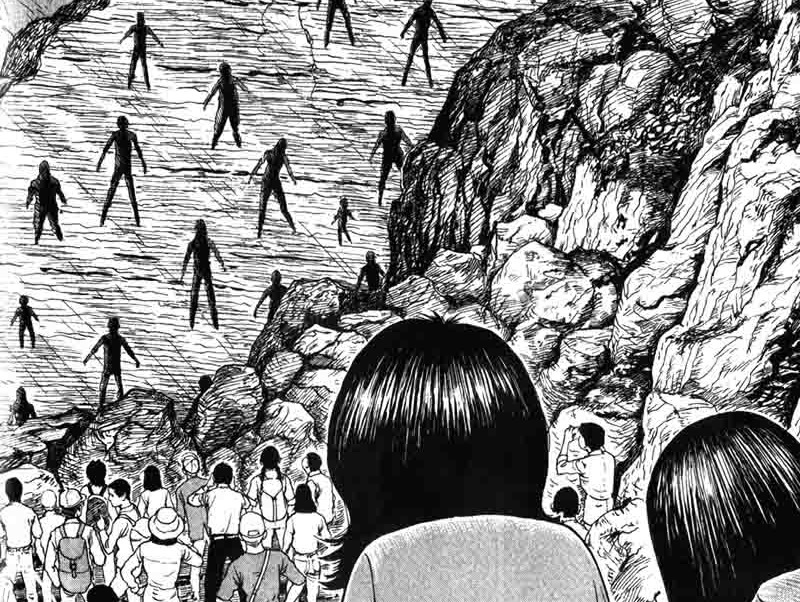

The Enigma of Amigara Fault |
Your name is Owaki. After seeing a strange occurance on TV. You decide to go to the fault to investigate the aftermath of an earthquake. You follow the crowd, only to be shocked by the sight in front of you-- Countless of human-shaped holes in the mountain.
